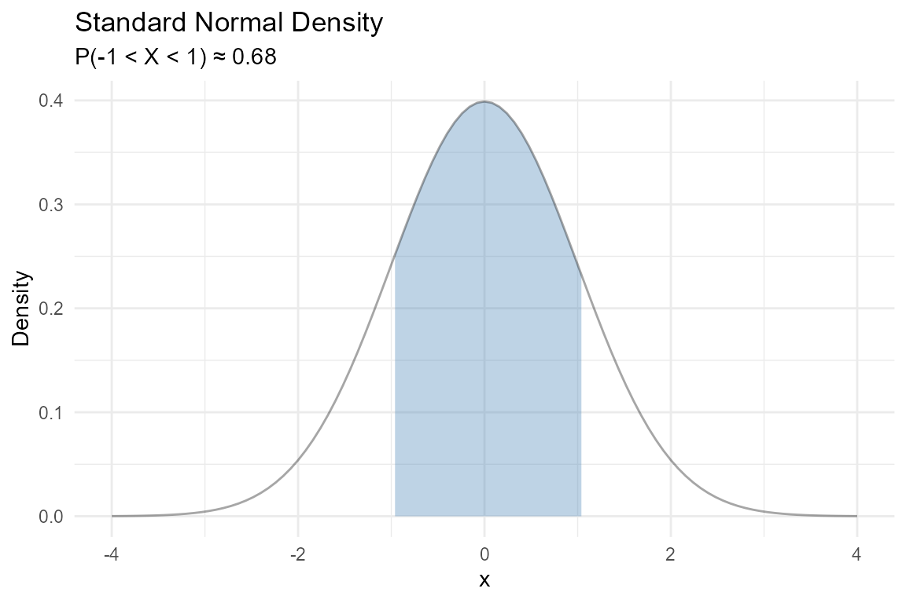
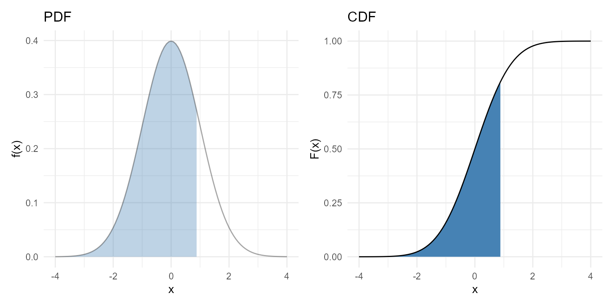
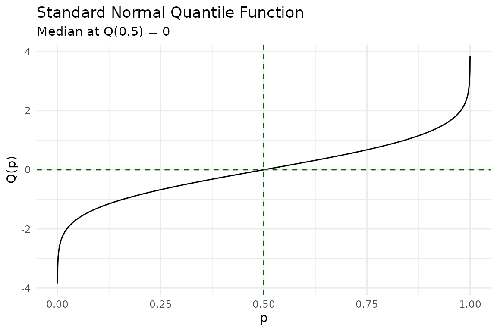
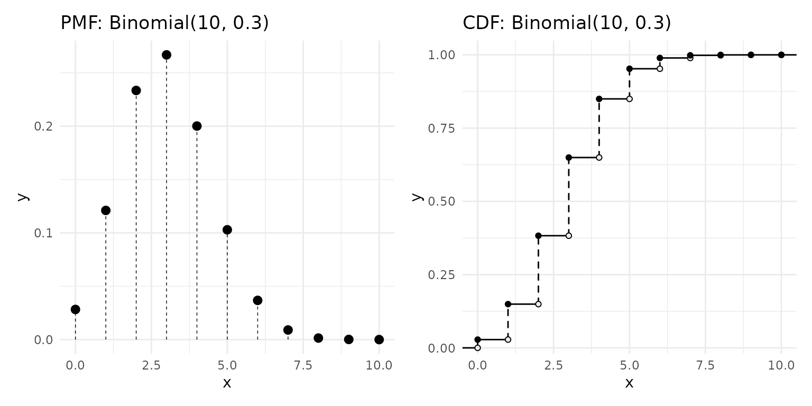
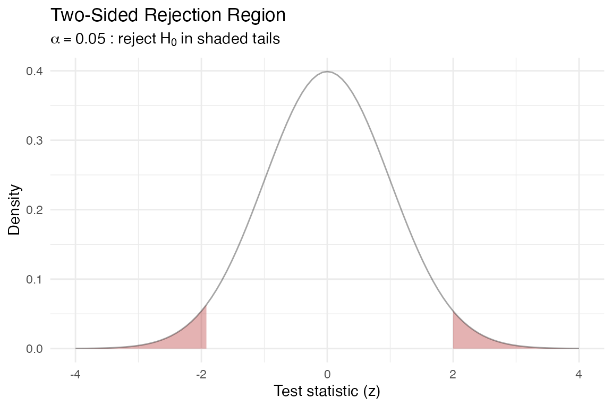
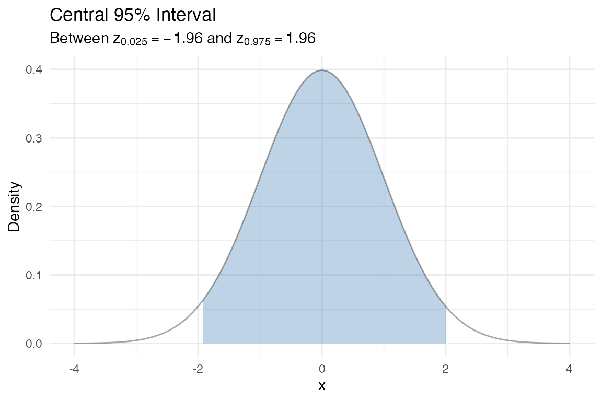
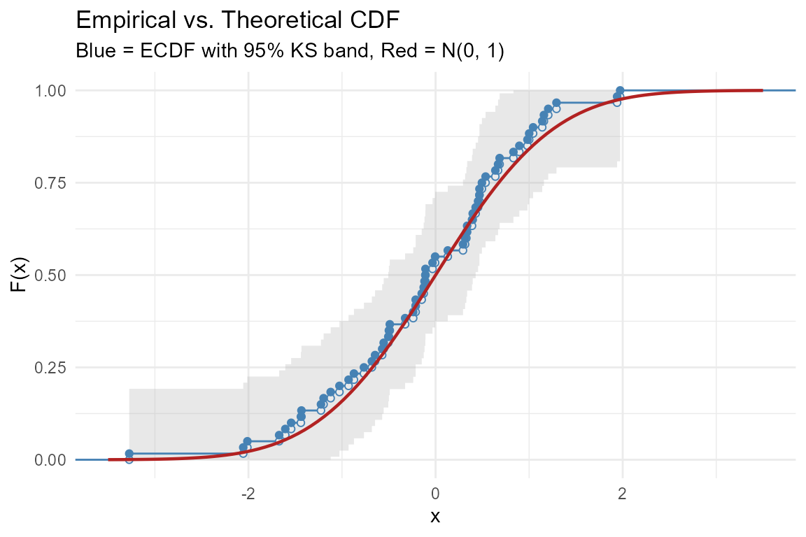
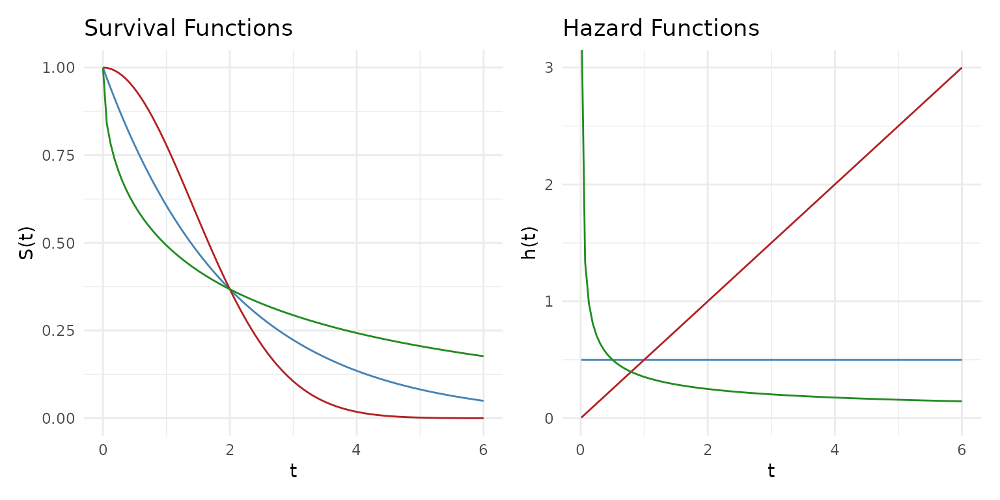
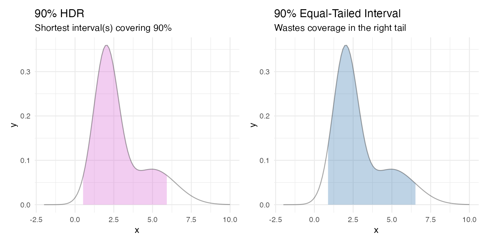

Learning Statistics with ggfunction
Source:vignettes/learning-statistics.Rmd
learning-statistics.RmdThis vignette uses ggfunction to illustrate core statistical concepts. Each section tells a self-contained story.
What is a PDF?
A probability density function (PDF) describes the relative likelihood of a continuous random variable taking on a given value. The area under the curve over an interval equals the probability of falling in that interval.
For a standard normal, :
ggplot() +
geom_pdf(fun = dnorm, xlim = c(-4, 4),
p_lower = pnorm(-1), p_upper = pnorm(1),
fill = "steelblue") +
labs(title = "Standard Normal Density",
subtitle = "P(-1 < X < 1) \u2248 0.68",
x = "x", y = "Density") +
theme_minimal()
From PDF to CDF
The cumulative distribution function (CDF) is the running area under the PDF from to . Notice how the CDF’s steepest climb corresponds to where the PDF is tallest:
p1 <- ggplot() +
geom_pdf(fun = dnorm, xlim = c(-4, 4), fill = "steelblue",
p = 0.8) +
labs(title = "PDF", x = "x", y = "f(x)") +
theme_minimal()
p2 <- ggplot() +
geom_cdf(fun = pnorm, xlim = c(-4, 4), p = 0.8,
fill = "steelblue") +
labs(title = "CDF", x = "x", y = "F(x)") +
theme_minimal()
p1 + p2
Quantiles and percentiles
The quantile function answers the inverse question: given a probability , what value satisfies ?
The median is the 50th percentile — :
ggplot() +
geom_qf(fun = qnorm, args = list(mean = 0, sd = 1)) +
geom_vline(xintercept = 0.5, linetype = "dashed", color = "darkgreen") +
geom_hline(yintercept = 0, linetype = "dashed", color = "darkgreen") +
labs(title = "Standard Normal Quantile Function",
subtitle = "Median at Q(0.5) = 0",
x = "p", y = "Q(p)") +
theme_minimal()
Discrete distributions
Discrete random variables assign probability to individual points. The PMF shows these as lollipops. The discrete CDF is a right-continuous step function with jumps at each support point — open circles mark where the function jumps away from, closed circles mark where it lands:
binom_args <- list(size = 10, prob = 0.3)
p1 <- ggplot() +
geom_pmf(fun = dbinom, xlim = c(0, 10), args = binom_args) +
labs(title = "PMF: Binomial(10, 0.3)") +
theme_minimal()
p2 <- ggplot() +
geom_cdf_discrete(pmf_fun = dbinom, xlim = c(0, 10), args = binom_args) +
labs(title = "CDF: Binomial(10, 0.3)") +
theme_minimal()
p1 + p2
Hypothesis testing visually
In a two-sided test at significance level , we reject when the test statistic falls in the tails beyond . The shaded rejection region captures the most extreme 5% of the null distribution:
ggplot() +
geom_pdf(
fun = dnorm, xlim = c(-4, 4),
p_lower = 0.025, p_upper = 0.975,
shade_outside = TRUE, fill = "firebrick"
) +
labs(
title = "Two-Sided Rejection Region",
subtitle = expression(alpha == 0.05 ~ ": reject" ~ H[0] ~ "in shaded tails"),
x = "Test statistic (z)", y = "Density"
) +
theme_minimal()
Confidence intervals
A 95% confidence interval for the mean of a normal distribution corresponds to the central 95% of the sampling distribution. The shaded region below shows the values that are not rejected by the two-sided test:
ggplot() +
geom_pdf(
fun = dnorm, xlim = c(-4, 4),
p_lower = 0.025, p_upper = 0.975,
fill = "steelblue"
) +
labs(
title = "Central 95% Interval",
subtitle = expression("Between" ~ z[0.025] == -1.96 ~ "and" ~ z[0.975] == 1.96),
x = "x", y = "Density"
) +
theme_minimal()
Comparing theory to data
Generate a sample from
and overlay the empirical CDF with the theoretical CDF. The KS
confidence band (shown automatically by geom_ecdf()) helps
assess whether the data are consistent with the theoretical model:
set.seed(2024)
df <- data.frame(x = rnorm(40))
ggplot(df, aes(x = x)) +
geom_ecdf(color = "steelblue") +
geom_cdf(fun = pnorm, xlim = c(-3.5, 3.5),
color = "firebrick", linewidth = 0.8) +
labs(
title = "Empirical vs. Theoretical CDF",
subtitle = "Blue = ECDF with 95% KS band, Red = N(0, 1)",
x = "x", y = "F(x)"
) +
theme_minimal()
Survival and hazard
The survival function gives the probability of surviving past time . The hazard function is the instantaneous failure rate.
The exponential distribution has a constant hazard — no memory of aging. The Weibull distribution allows increasing or decreasing hazard depending on the shape parameter:
p1 <- ggplot() +
geom_survival(fun = pexp, xlim = c(0, 6),
args = list(rate = 0.5), color = "steelblue") +
geom_survival(fun = pweibull, xlim = c(0, 6),
args = list(shape = 2, scale = 2), color = "firebrick") +
geom_survival(fun = pweibull, xlim = c(0, 6),
args = list(shape = 0.5, scale = 2), color = "forestgreen") +
labs(title = "Survival Functions", x = "t", y = "S(t)") +
theme_minimal()
p2 <- ggplot() +
geom_hf(pdf_fun = dexp, cdf_fun = pexp, xlim = c(0.01, 6),
args = list(rate = 0.5), color = "steelblue") +
geom_hf(pdf_fun = dweibull, cdf_fun = pweibull, xlim = c(0.01, 6),
args = list(shape = 2, scale = 2), color = "firebrick") +
geom_hf(pdf_fun = dweibull, cdf_fun = pweibull, xlim = c(0.01, 6),
args = list(shape = 0.5, scale = 2), color = "forestgreen") +
labs(title = "Hazard Functions", x = "t", y = "h(t)") +
coord_cartesian(ylim = c(0, 3)) +
theme_minimal()
p1 + p2
Blue = Exponential (constant hazard), Red = Weibull shape 2 (increasing), Green = Weibull shape 0.5 (decreasing).
Highest density regions
For skewed or multimodal distributions, equal-tailed intervals waste coverage on low-density areas. A highest density region (HDR) always captures the most probable values for a given coverage level.
Compare the HDR to an equal-tailed interval for a right-skewed mixture:
skewed <- function(x) 0.7 * dnorm(x, 2, 0.8) + 0.3 * dnorm(x, 5, 1.5)
p1 <- ggplot() +
geom_pdf(fun = skewed, xlim = c(-2, 10), shade_hdr = 0.9,
fill = "orchid") +
labs(title = "90% HDR", subtitle = "Shortest interval(s) covering 90%") +
theme_minimal()
# For comparison: equal-tailed 90%
# Find quantiles by numerical inversion
skewed_cdf <- function(x) {
0.7 * pnorm(x, 2, 0.8) + 0.3 * pnorm(x, 5, 1.5)
}
q_lower <- uniroot(function(x) skewed_cdf(x) - 0.05, c(-5, 10))$root
q_upper <- uniroot(function(x) skewed_cdf(x) - 0.95, c(-5, 10))$root
p2 <- ggplot() +
geom_pdf(fun = skewed, xlim = c(-2, 10),
p_lower = 0.05, p_upper = 0.95,
fill = "steelblue") +
labs(title = "90% Equal-Tailed Interval",
subtitle = "Wastes coverage in the right tail") +
theme_minimal()
p1 + p2
The HDR concentrates coverage on the high-density peak, while the equal-tailed interval extends far into the sparse right tail.